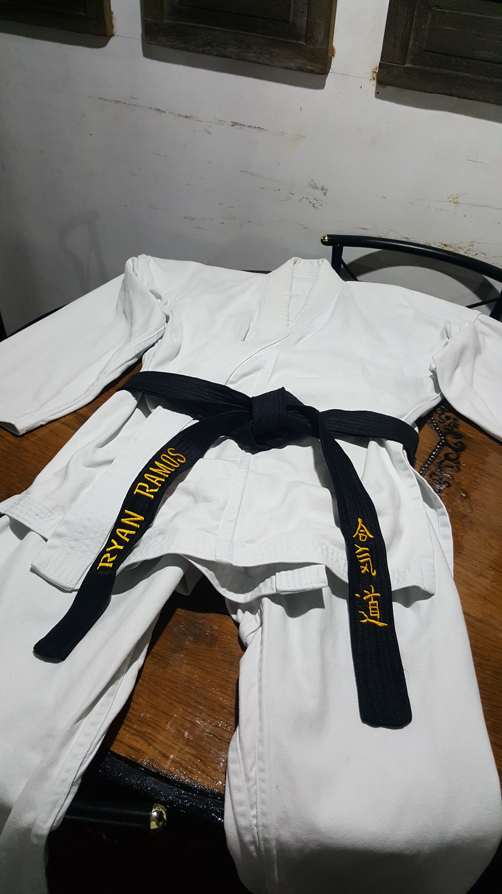

I STARTED MARTIAL ARTS WHEN I WAS AROUND GRADE 1 OR TWO,OR YOUNGER(not sure really) .I DID TAEKWONDO,BUT WHEN I REACHED YELLOW BELT,I STARTED TO DROP OUT.THEN AT GRADE 5,I CAME TO KARATE,WHICH MY FATHER DOES...TILL NOW.I ONLY STAYED SIX MONTHS,BECAUSE I CANNOT HANDLE THE TRAINING AND MY CLASSMATES WERE ANNOYING.I THEN DISCOVERED AIKIDO, A.K.A JUJUTSU AT GRADE SIX.I THEN RECEIVED MY BLACK BELT AT THE MARTIAL ART AT JUNE 2015(i think). I DECIDED TO CONTINUE MY TAEKWONDO AROUND JUNE 2017.I AM CURRENTLY A 1st DAN BLACKBELT IN AIKIDO, WHILE A 5th BLUE BELT AT TAEKWONDO NOW.
I NO LONGER PRACTICE AIKIDO NOW BECAUSE THE SCHOOL CLOSED,DUE TO UNSETTLED ISSUES.AS WELL BECAUSE I TOOK
THIS SKILL FOR GRANTED...smh :'(
I WILL MAKE-UP TRU TAEKWONDO.
I STARTED MARTIAL ARTS BECAUSE
AND ETC...
